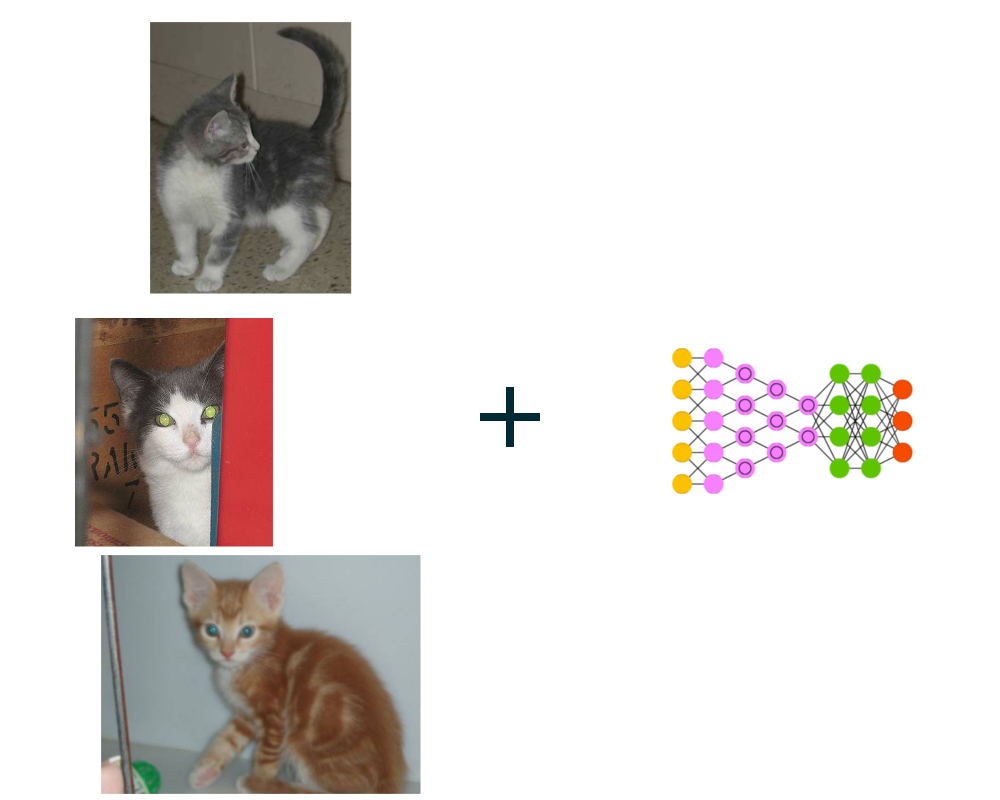
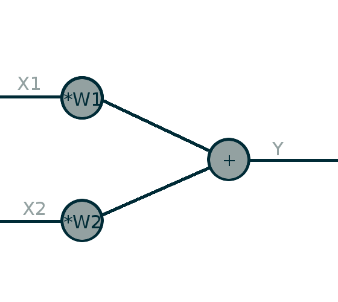

Últimamente se han conseguido solucionar problemas que se encontraban fuera de nuestro alcance
Los ordenadores son máquinas muy, muy rápidas.
>>> def calculo(): ... return 3 * 7 / 5 + 4 ... >>> timeit(calculo, number=1000 * 1000) 0.12249544799851719 >>>
Pero…
>>> gato in imagen
???

Tenemos unos datos de entrada y unas etiquetas de salida que queremos aprender a relacionar
http://playground.tensorflow.org/
No hay ninguna etiqueta, la algoritmia es quien debe encontrarlas.

Limitaciones
http://playground.tensorflow.org/#dataset=xor®Dataset=reg-plane&learningRate=0.03&networkShape
Computer vision
Generación de textos https://karpathy.github.io/2015/05/21/rnn-effectiveness/